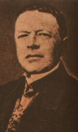
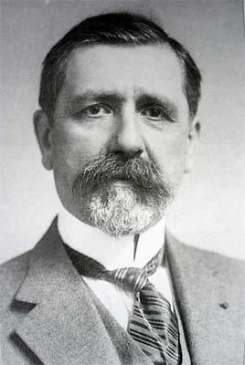
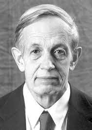
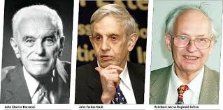
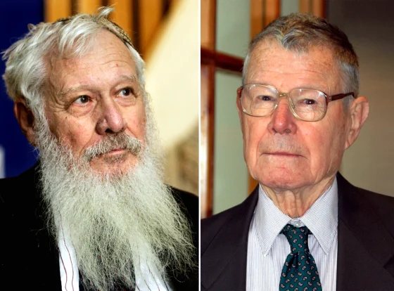

Sesión 1: Introducción al Pensamiento Estratégico
Video Introductorio: La Estrategia en Acción
La siguiente escena de "Una Mente Maravillosa" ilustra un concepto clave de la teoría de juegos. Haz clic en el botón para verla directamente en YouTube.
Ver Video en YouTube¿Qué es la teoría de juegos? Historia y fundamentos.
La Teoría de Juegos es mucho más que el estudio de juegos de mesa como el ajedrez o el póker, aunque comparte con ellos una idea fundamental: el análisis de las decisiones estratégicas. En esencia, es una rama de las matemáticas y la economía que nos proporciona un marco formal para entender situaciones en las que el resultado de nuestras decisiones depende no solo de lo que nosotros hacemos, sino también de lo que hacen los demás.
Imagina que eres el gerente de una empresa que debe decidir si bajar o no los precios de un producto. Si tu competencia mantiene sus precios, bajarlos podría atraer a muchos clientes. Pero si la competencia también baja sus precios, ambos podrían terminar con menores márgenes de ganancia. ¿Qué haces? Esta encrucijada, donde los destinos están entrelazados, es el corazón de la Teoría de Juegos.
Los Pilares de la Teoría de Juegos:
- Jugadores: Son los agentes que toman las decisiones. En nuestro ejemplo, las dos empresas. En política, podrían ser dos países negociando un tratado.
- Estrategias: Son las acciones que cada jugador puede tomar.
- Pagos (o Utilidades): Es el resultado o la recompensa que un jugador recibe al final del juego. Puede ser ganancia monetaria, poder, satisfacción, etc.
- Racionalidad: Es la suposición clave. Asumimos que cada jugador actúa de manera lógica para maximizar su propio pago, y sabe que los demás jugadores también lo hacen.
La Teoría de Juegos utiliza modelos matemáticos para analizar estas interacciones. No busca decirnos cómo se comportan las personas en la vida real (que a menudo es irracional), sino cómo se comportarían si fueran perfectamente lógicas y estuvieran enfocadas en sus propios objetivos. Su poder radica en que, al modelar este comportamiento ideal, podemos predecir tendencias, entender conflictos, explicar la cooperación y, lo más importante, diseñar mejores sistemas y políticas.
Desde negociaciones comerciales y campañas políticas hasta la competencia entre especies en biología, sus aplicaciones son increíblemente amplias, convirtiéndola en una herramienta indispensable para el analista moderno.
Recurso Adicional:
Ver Video ComplementarioReferentes Históricos: De Mitos Antiguos a la Ciencia Moderna
Aunque la Teoría de Juegos como ciencia formal es un desarrollo del siglo XX, la idea de analizar la estrategia en las interacciones humanas es tan antigua como la civilización misma. Podemos encontrar intuiciones sobre el pensamiento estratégico en textos clásicos y relatos antiguos.
Precursores y Primeras Ideas
- Antoine Augustin Cournot (1838):  Este matemático y economista francés es considerado un precursor clave. En su obra "Recherches sur les principes mathématiques de la teoría de las riquezas", analizó la competencia entre un pequeño número de empresas (oligopolio), introduciendo un concepto de equilibrio que es un antecedente directo del Equilibrio de Nash. Su modelo de competencia de cantidades es un ejemplo temprano y brillante de interacción estratégica.
- Émile Borel (1921):  El matemático francés Émile Borel realizó importantes contribuciones tempranas a la teoría de juegos, particularmente en el estudio de juegos de matriz y estrategias mixtas. Su trabajo sentó algunas de las bases para el desarrollo posterior de la teoría.
El Nacimiento Formal de la Teoría de Juegos
- Ernst Zermelo (1913): Fue uno de los primeros en usar la lógica matemática para estudiar juegos. Zermelo probó que en juegos como el ajedrez (de dos jugadores, por turnos, con información perfecta y sin empates), siempre existe una estrategia óptima que garantiza la victoria o el empate para uno de los jugadores.
- John von Neumann y Oskar Morgenstern (1944):
 La publicación de su obra cumbre, "Theory of Games and Economic Behavior", marcó el verdadero nacimiento de la Teoría de Juegos como disciplina formal. Von Neumann, un genio matemático, y Morgenstern, un economista, establecieron un marco matemático riguroso para analizar una amplia variedad de juegos, especialmente los de "suma cero" (donde la ganancia de un jugador es la pérdida exacta del otro). Su trabajo no solo definió los conceptos fundamentales, sino que también demostró la existencia de soluciones para estos juegos, sentando las bases para toda la investigación posterior.
La publicación de su obra cumbre, "Theory of Games and Economic Behavior", marcó el verdadero nacimiento de la Teoría de Juegos como disciplina formal. Von Neumann, un genio matemático, y Morgenstern, un economista, establecieron un marco matemático riguroso para analizar una amplia variedad de juegos, especialmente los de "suma cero" (donde la ganancia de un jugador es la pérdida exacta del otro). Su trabajo no solo definió los conceptos fundamentales, sino que también demostró la existencia de soluciones para estos juegos, sentando las bases para toda la investigación posterior. - John Nash (Años 50):  La contribución de John Nash fue revolucionaria. Su concepto de "Equilibrio de Nash" extendió la aplicabilidad de la teoría a juegos "no cooperativos" donde puede haber ganancias mutuas. Este avance abrió la puerta a la aplicación de la teoría en la economía, la política y la biología.
Estos hitos transformaron el análisis estratégico de una anécdota a una ciencia rigurosa, dándonos las herramientas que exploraremos a lo largo de este curso.
Premios Nobel y el Reconocimiento de la Teoría de Juegos
La importancia de la Teoría de Juegos en la comprensión de fenómenos económicos y sociales ha sido reconocida con varios Premios Nobel de Economía. Destacan:
- 1994: John Harsanyi, John Nash y Reinhard Selten. 
Estos tres economistas y matemáticos fueron galardonados por su "análisis pionero de los equilibrios en la teoría de los juegos no cooperativos".
- John Nash: Su contribución más famosa es el concepto de Equilibrio de Nash, una solución para juegos no cooperativos donde ningún jugador puede mejorar su resultado cambiando unilateralmente su estrategia, dadas las estrategias de los demás. Este concepto revolucionó la economía al permitir analizar una vasta gama de interacciones estratégicas más allá de los juegos de suma cero.
- John Harsanyi: Extendió la teoría de juegos a situaciones de información incompleta, donde los jugadores no conocen completamente las preferencias o tipos de los otros. Desarrolló el concepto de Equilibrio Bayesiano de Nash, que incorpora las creencias de los jugadores sobre la información privada de los demás.
- Reinhard Selten: Se centró en el refinamiento de los conceptos de equilibrio, introduciendo el concepto de Equilibrio Perfecto en Subjuegos para juegos dinámicos. Esto permitió eliminar equilibrios "no creíbles" basados en amenazas vacías, asegurando que las estrategias sean óptimas en cada etapa del juego.
- 2005: Robert Aumann y Thomas Schelling. 
Recibieron el premio por "haber mejorado nuestra comprensión del conflicto y la cooperación a través del análisis de la teoría de juegos".
- Robert Aumann: Su trabajo se centró en los juegos repetidos y la cooperación a largo plazo. Demostró cómo la posibilidad de futuras interacciones puede fomentar la cooperación, incluso en situaciones donde la traición sería la estrategia dominante en un juego de una sola vez (Teorema Folk).
- Thomas Schelling: Exploró la dinámica de la negociación y la disuasión. Su análisis de la estrategia militar y las relaciones internacionales mostró cómo la amenaza creíble, el compromiso y la comunicación pueden influir en los resultados estratégicos, incluso en ausencia de reglas formales.
- 2012: Alvin Roth y Lloyd Shapley.
Fueron premiados por la teoría de las asignaciones estables y el diseño de mercados.
- Lloyd Shapley: Desarrolló algoritmos para encontrar asignaciones estables en mercados sin precios, como el problema del matrimonio estable o la asignación de estudiantes a escuelas. Su concepto de "valor de Shapley" es una forma de distribuir las ganancias en juegos cooperativos.
- Alvin Roth: Aplicó y extendió la teoría de Shapley al diseño de mercados en la práctica, ayudando a rediseñar sistemas de asignación en áreas como la asignación de médicos residentes a hospitales, la donación de órganos y la asignación de estudiantes a escuelas públicas.
Estos reconocimientos subrayan la profunda influencia de la Teoría de Juegos en la economía moderna y en otras ciencias sociales.
Conceptos Básicos del Juego
Para analizar cualquier interacción estratégica, necesitamos un lenguaje común. La Teoría de Juegos nos lo proporciona a través de un conjunto de conceptos fundamentales que definen la estructura de cualquier "juego".
- Juego
- Formalmente, un juego es cualquier situación de interacción estratégica con reglas bien definidas. No se limita al ocio; describe desde una negociación salarial hasta una carrera armamentista. La clave es que el resultado para cada participante depende de las decisiones de todos.
- Jugadores
- Son los individuos o entidades (empresas, partidos políticos, animales) que participan en el juego y toman decisiones. Un supuesto fundamental es que son racionales, es decir, que tienen preferencias claras y eligen las acciones que creen que les darán el mejor resultado posible.
- Estrategia
- Una estrategia es un plan de acción completo que un jugador seguirá en cualquier situación que pueda surgir dentro del juego. No es solo una jugada, sino una política general. Por ejemplo, en el dilema del prisionero, una estrategia sería "siempre traicionar" o "siempre cooperar".
- Ganancia (Pago o Utilidad)
- La ganancia es el valor que un jugador asocia a cada posible resultado del juego. Es la cuantificación de su recompensa o satisfacción. Para una empresa, puede ser la utilidad neta; para un político, la cantidad de votos obtenidos.
- Resultados
- Un resultado es la consecuencia final del juego, determinada por la combinación de estrategias elegidas por todos los jugadores. Cada resultado tiene asociado un pago específico para cada jugador.
Entender estos elementos es el primer paso para poder modelar una situación y, eventualmente, predecir el equilibrio del juego.
Intuición: El Juego de Repartir un Pastel
Para visualizar cómo se distribuyen las ganancias y los resultados, podemos usar la clásica analogía de "repartir un pastel". Imagina que dos personas deben dividir un pastel. Si una persona lo corta y la otra elige la porción, la primera tiene un incentivo para cortar el pastel en partes iguales para asegurarse una porción justa. Este simple juego ilustra cómo las reglas (quién corta, quién elige) y las estrategias (cortar equitativamente, elegir la porción más grande) determinan los pagos (el tamaño de la porción de pastel) y el resultado final de la interacción.
Entender estos elementos es el primer paso para poder modelar una situación y, eventualmente, predecir el equilibrio del juego.
El Equilibrio de Nash: El Corazón de la Teoría de Juegos
Una vez que tenemos los componentes de un juego, la pregunta natural es: ¿qué pasará? El concepto más famoso para predecir el resultado de un juego es el Equilibrio de Nash, nombrado así por el matemático John Forbes Nash, ganador del Premio Nobel.
En términos sencillos, un Equilibrio de Nash es una situación en la que todos los jugadores han elegido su mejor estrategia posible, dadas las estrategias que han elegido los demás. Es un punto de estabilidad, un estado en el que nadie tiene un incentivo para cambiar su decisión si los demás mantienen la suya. Es como un "acuerdo no escrito" al que llegan los jugadores racionales.
La Lógica del "No Arrepentimiento"
La mejor forma de entenderlo es con la idea del "no arrepentimiento". Si un juego está en un Equilibrio de Nash, ningún jugador mirará hacia atrás y dirá: "¡Debería haber hecho otra cosa!", porque, considerando lo que los otros hicieron, su elección fue la óptima.
Pensemos en el tráfico de la ciudad. Cada conductor elige una ruta para llegar a su destino. Si todos los conductores están en un Equilibrio de Nash, significa que ninguno puede encontrar una ruta más rápida cambiando de calle por sí solo (asumiendo que el tráfico en las otras calles no cambia). Todos están haciendo lo mejor que pueden, dada la congestión creada por los demás.
Es crucial entender que un Equilibrio de Nash no significa necesariamente el mejor resultado para el grupo. A menudo, los equilibrios pueden llevar a resultados subóptimos para todos los implicados, como en el famoso "Dilema del Prisionero", donde la traición mutua es un Equilibrio de Nash, aunque la cooperación mutua beneficiaría a ambos. Exploraremos este y otros juegos importantes en la siguiente sección.
Juegos Clásicos: Dilemas, Batallas y Coordinación
La mejor manera de entender los conceptos de la Teoría de Juegos es a través de ejemplos. A lo largo de la historia, han surgido algunos "juegos" tan ilustrativos que se han convertido en piedras angulares del campo. Estos nos ayudan a entender la tensión entre el interés individual y el bien común.
1. El Dilema del Prisionero
Este es, quizás, el juego más famoso. Imagina que dos sospechosos de un crimen son arrestados y puestos en celdas separadas, sin posibilidad de comunicarse. La policía no tiene pruebas suficientes para una condena grave, a menos que uno de ellos confiese (traicione al otro).
- Si ninguno confiesa (cooperan entre sí), ambos reciben una pena menor (ej. 1 año de cárcel).
- Si uno confiesa (traiciona) y el otro no, el traidor queda libre y el otro recibe una pena muy dura (ej. 10 años).
- Si ambos confiesan (traicionan mutuamente), ambos reciben una pena intermedia (ej. 5 años).
El "dilema" es que, desde una perspectiva individual, la mejor estrategia es siempre traicionar. El resultado (Equilibrio de Nash) es que ambos se traicionan y terminan peor de lo que estarían si ambos hubieran cooperado. Este juego es un modelo poderoso para entender por qué fallan los acuerdos de paz o las negociaciones climáticas.
2. La Batalla de los Sexos
Este juego describe una situación diferente: dos personas quieren pasar tiempo juntas, pero tienen preferencias distintas sobre qué hacer. Digamos que uno prefiere ir a la ópera y el otro al fútbol.
- Ambos prefieren ir juntos a cualquier actividad que ir solos.
- El jugador 1 prefiere que ambos vayan al fútbol.
- El jugador 2 prefiere que ambos vayan a la ópera.
Aquí hay dos Equilibrios de Nash: (Fútbol, Fútbol) y (Ópera, Ópera). Es un juego de coordinación, pero con un conflicto de intereses. Muestra cómo pueden existir múltiples resultados estables y cómo la comunicación o las normas sociales pueden ser cruciales para decidir a cuál equilibrio se llega.
3. El Juego de Coordinación (o La Caza del Ciervo)
Este juego ilustra los beneficios de la confianza y la cooperación. Dos cazadores van a cazar. Tienen dos presas posibles: un ciervo o liebres.
- Para cazar un ciervo, necesitan la cooperación de ambos. Si lo logran, obtienen un gran festín (pago alto).
- En cualquier momento, uno puede abandonar la caza del ciervo para cazar una liebre por su cuenta. Esto le da un pago pequeño pero seguro, mientras que el que se quedó esperando al ciervo no obtiene nada.
Aquí también hay dos Equilibrios de Nash: (Cazar Ciervo, Cazar Ciervo) y (Cazar Liebre, Cazar Liebre). Si confías en que el otro cooperará, tu mejor opción es cooperar también. Pero si temes que el otro te abandonará, tu mejor opción es ir a lo seguro. Este juego modela situaciones como la inversión en bienes públicos, donde el éxito depende de la acción colectiva.
Juegos Repetidos: La Sombra del Futuro
Hasta ahora, hemos analizado juegos que se juegan una sola vez. Sin embargo, muchas interacciones en la vida real se repiten. La posibilidad de futuras interacciones proyecta lo que se conoce como "la sombra del futuro" sobre el presente, introduciendo dos elementos clave: la reputación y la posibilidad de represalias.
Juegos Finitos vs. Infinitos
La clave para entender los juegos repetidos es saber si tienen un final conocido.
- Juegos Finitos: Si un juego como el Dilema del Prisionero se repite un número fijo de veces (ej. 10 rondas), la lógica se desentraña desde el final. En la última ronda, no hay futuro, por lo que la única jugada racional es traicionar. Sabiendo esto, tampoco hay incentivo para cooperar en la penúltima ronda, y así sucesivamente. La traición se extiende a todas las rondas.
- Juegos Infinitos (o de horizonte incierto): Si los jugadores no saben cuándo terminará el juego, la cooperación se vuelve una posibilidad real. Como siempre hay "una próxima ronda", el beneficio a corto plazo de una traición puede ser superado por el beneficio a largo plazo de la cooperación mutua.
La Estrategia "Ojo por Ojo" (Tit-for-Tat)
En este contexto, una de las estrategias más famosas y efectivas es el "Ojo por Ojo".
- Empieza cooperando en la primera ronda.
- A partir de ahí, haz lo que tu oponente hizo en la ronda anterior.
Esta estrategia es exitosa porque es amable (nunca es la primera en traicionar), implacable (castiga la traición inmediatamente), indulgente (vuelve a cooperar si el oponente lo hace) y clara. Demuestra que en interacciones duraderas, la cooperación puede surgir no del altruismo, sino de un cálculo racional.
Juegos Consecutivos y la Inducción hacia Atrás
No todas las decisiones se toman al mismo tiempo. En muchos escenarios, los jugadores actúan en secuencia, observando las acciones de quienes los precedieron. Estos son los juegos consecutivos o secuenciales.
El Árbol de Decisión: Visualizando el Futuro
En lugar de una matriz, estos juegos se representan como un árbol de decisión. El primer jugador está en el "tronco" y elige una rama. El segundo jugador, al ver qué rama ha elegido el primero, se encuentra en un nuevo punto de decisión y elige su propia rama. El juego termina en las "hojas" del árbol, donde se encuentran los pagos para cada jugador.
Inducción hacia Atrás: Pensar del Final al Principio
La clave para "resolver" un juego consecutivo es la inducción hacia atrás. En lugar de pensar en qué hacer primero, empezamos por el final del juego.
- Ve al último punto de decisión del juego.
- Determina qué acción tomaría un jugador racional en ese punto para maximizar su pago.
- "Poda" las otras ramas; esas acciones no se tomarán.
- Retrocede al penúltimo punto de decisión. El jugador en este punto, anticipando el resultado de la jugada final, ahora puede tomar su propia decisión óptima.
- Repite este proceso hasta llegar al inicio del juego.
Al pensar del final al principio, podemos predecir la secuencia de jugadas que constituirá el equilibrio del juego (conocido como Equilibrio Perfecto en Subjuegos) y descartar amenazas "no creíbles".
Conclusiones de la Sesión 1
En esta primera sesión, hemos sentado las bases fundamentales de la Teoría de Juegos. Desde sus orígenes históricos y la distinción crucial con la teoría de la decisión, hasta los conceptos básicos que la definen y el pilar del Equilibrio de Nash. Hemos explorado cómo los juegos clásicos ilustran dilemas estratégicos y cómo la repetición de interacciones y el orden de las jugadas transforman el comportamiento racional. Esta sesión es solo el comienzo de un viaje fascinante hacia la comprensión de la estrategia en el análisis político y la administración pública.
Te invitamos a revisar los conceptos y a reflexionar sobre cómo estas ideas se manifiestan en tu entorno. ¡El mundo está lleno de juegos!